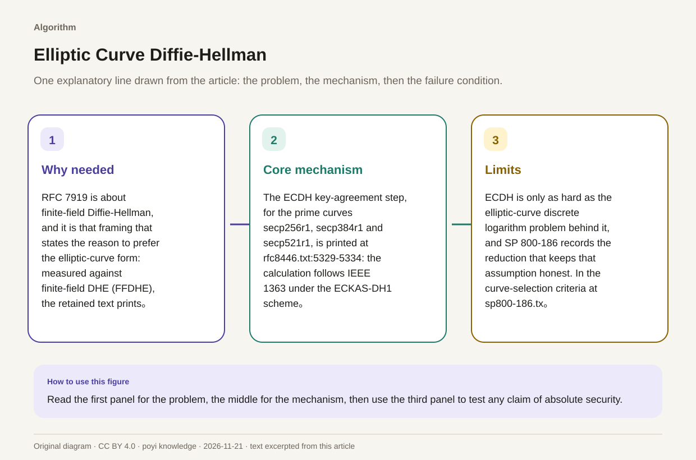
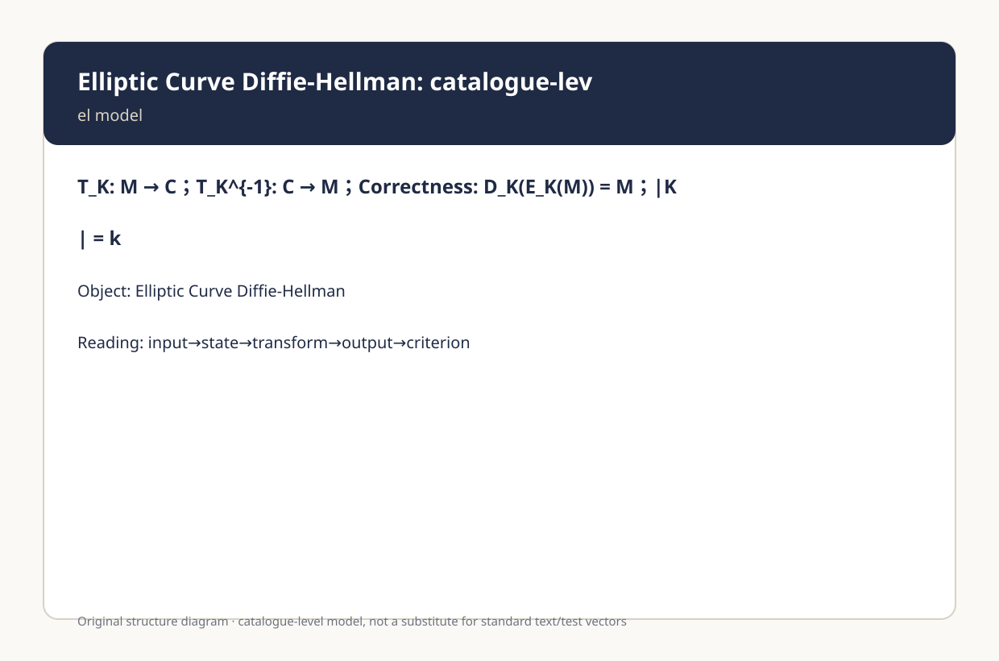

Principles
Algorithm: Elliptic Curve Diffie-Hellman (ECDH 椭圆曲线密钥协商). The ECDH key-agreement step, for the prime curves secp256r1, secp384r1 and secp521r1, is printed at rfc8446.txt:5329-5334: the calculation follows IEEE 1363 under the ECKAS-DH1 scheme, and the derived value is, in the file's own words, "the shared secret is the x-coordinate" of the ECDH shared-secret elliptic curve point, expressed as a fixed-length octet string whose leading zeros are not to be truncated. The full sentence wraps across indented continuation lines, so only that x-coordinate fragment is quoted and the rest is stated by line reference. Two points about scope: this is the classical ECDH primitive (multiply the peer's public point by your private scalar, take the x-coordinate), and RFC 8446 treats the x-coordinate as an intermediate value rather than a finished key - a separate claim covers the key derivation, so it is not asserted here.

Why it matters
RFC 7919 is about finite-field Diffie-Hellman, and it is that framing that states the reason to prefer the elliptic-curve form: measured against finite-field DHE (FFDHE), the retained text prints, at rfc7919.txt:720, "a much stronger key exchange mechanism than FFDHE" for ECDHE at comparable computational cost. The same section is explicit that RFC 7919 itself does not cover finite-field-only cases nor address ECDHE (which it says is defined in RFC 4492) - the point of the sentence is comparative, not a definition of ECDH. So the design reason the standards give is efficiency: an elliptic-curve group delivers the same style of agreement at lower cost per security level than the finite-field construction. This is exactly the trade the cited document asserts; it does not claim a proof of equivalence between the two settings.
Applications
NIST SP 800-186 places ECDH among the uses of elliptic curves. The whole category sentence is printed at sp800-186.txt:335-337: "Elliptic curve cryptography (ECC) has uses in applications involving digital signatures (e.g., Elliptic Curve Digital Signature Algorithm [ECDSA]) and key agreement schemes (e.g., Elliptic Curve Diffie-Hellman [ECDH])." The Recommendation also states, near sp800-186.txt:357-359, that the key pairs it specifies are for signature or key agreement only and should not be used for other purposes. That is the deployment role the evidence supports: ECDH is the key-agreement member of the discrete-log-based elliptic-curve family. The same document is left-aligned, so this sentence rejoins with ordinary single spaces and is quoted intact.

Limits & attacks
ECDH is only as hard as the elliptic-curve discrete logarithm problem behind it, and SP 800-186 records the reduction that keeps that assumption honest. In the curve-selection criteria at sp800-186.txt:2184-2198, item 5 prints that "an ordinary discrete logarithm problem defined over the finite field GF(qk)" is what the elliptic-curve discrete logarithm problem can be converted into (this is the MOV-type transfer); the superscript in GF(q^k) and the congruence sign that follows degrade in this extraction, so the embedding-degree condition is stated by line rather than quoted. Because that reduction exists, the same criteria require each curve to have a large embedding degree, a prime-order subgroup with small cofactor, and a non-anomalous order, so the transfer to the finite-field setting stays infeasible. What is not said here: this retained document does not mention quantum computers, so no quantum-break claim is attached to ECDH in this entry - the classical limit is the reduction, and the boundary the standards draw is curve selection that resists it.
History
The retained texts date when ECDH entered a standard, not who invented it. RFC 7568 (June 2015, running header at rfc7568.txt:60) lists, among the features that recent TLS versions added over SSLv3, "Elliptic Curve Diffie-Hellman (ECDH)" at rfc7568.txt:205, and the very next words say that ECDH and ECDSA are added in RFC 4492 - the continuation wraps with indentation, so only the (ECDH) term is quoted and the RFC 4492 attribution is paraphrased. RFC 7919 (August 2016) treats ECDHE as an established mechanism defined by RFC 4492 and compares it against its own finite-field scope. None of these retained documents gives an author or a first-publication date for the ECDH primitive itself, so this entry states only the dated standardization the sources actually print and no origin it cannot verify.
Worked example & verification
Formal model and reproduction steps
[K=g^{ab}\bmod p\quad\text{或}\quad K=[ab]G]
Elliptic Curve Diffie-Hellman: the registered public parameters, key material or randomness, and message are mapped through the stated transformation to an output checked against the registered criterion. The worked example is a structural reproduction, not a new test vector; parameter ranges, standard versions and implementation details remain source-bound.
References
- Wikipedia search entry for ECDH 椭圆曲线密钥协商. https://zh.wikipedia.org/w/index.php?search=ECDH%20%E6%A4%AD%E5%9C%86%E6%9B%B2%E7%BA%BF%E5%AF%86%E9%92%A5%E5%8D%8F%E5%95%86
- Handbook of Applied Cryptography (Menezes, van Oorschot, Vanstone). https://www.cacr.math.uwaterloo.ca/hac/